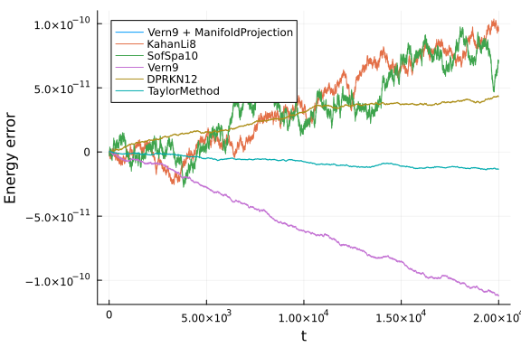
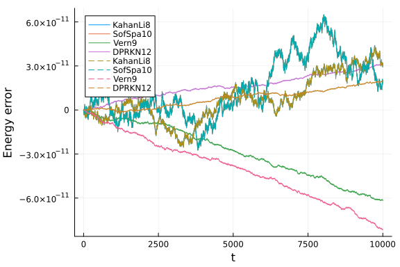

Quadruple Boson Energy Conservation
In this notebook we will study the energy conservation properties of several high-order methods for a system with the following Hamiltonian:
\[\mathcal{H}\left(q_0,q_2,p_0,p_2\right) = \frac{A}{2} \left(p_0^2 + p_2^2 + q_0^2 + q_2^2\right) + \frac{B}{\sqrt{2}} q_0 \left(3q_2^2 - q_0^2\right) + \frac{D}{4} \left(q_0^2+q_2^2\right)^2\]
This Hamiltonian resembles the Hénon-Heiles one, but it has an additional fourth order term. The aim of this benchmark is to see what happens with the energy error when highly accurate solutions are needed and how the results compare with the Hénon-Heiles case.
using OrdinaryDiffEq, Plots, DiffEqCallbacks, LinearAlgebra
using TaylorIntegration
using ParameterizedFunctions
using StaticArrays
gr()
default(fmt=:png)
T(p) = A / 2 * norm(p)^2
V(q) = A / 2 * (q[1]^2 + q[2]^2) + B / sqrt(2) * q[1] * (3 * q[2]^2 - q[1]^2) + D / 4 * (q[1]^2 + q[2]^2)^2
H(p, q, params) = T(p) + V(q)
const A, B, D = 1., 0.55, 0.4
function iip_dq(dq, p, q, params, t)
dq[1] = A * p[1]
dq[2] = A * p[2]
end
function iip_dp(dp, p, q, params, t)
dp[1] = -A * q[1] - 3 * B / sqrt(2) * (q[2]^2 - q[1]^2) - D * q[1] * (q[1]^2 + q[2]^2)
dp[2] = -q[2] * (A + 3 * sqrt(2) * B * q[1] + D * (q[1]^2 + q[2]^2))
end
const iip_q0 = [4.919080920016389, 2.836942666663649]
const iip_p0 = [0., 0.]
const iip_u0 = vcat(iip_p0,iip_q0)
function oop_dq(p, q, params, t)
p
end
function oop_dp(p, q, params, t)
dp1 = -A * q[1] - 3 * B / sqrt(2) * (q[2]^2 - q[1]^2) - D * q[1] * (q[1]^2 + q[2]^2)
dp2 = -q[2] * (A + 3 * sqrt(2) * B * q[1] + D * (q[1]^2 + q[2]^2))
@SVector [dp1, dp2]
end
const oop_q0 = @SVector [4.919080920016389, 2.836942666663649]
const oop_p0 = @SVector [0., 0.]
const oop_u0 = vcat(oop_p0,oop_q0)
function hamilton(z, params, t)
SVector(
-A * z[3] - 3 * B / sqrt(2) * (z[4]^2 - z[3]^2) - D * z[3] * (z[3]^2 + z[4]^2),
-z[4] * (A + 3 * sqrt(2) * B * z[3] + D * (z[3]^2 + z[4]^2)),
z[1],
z[2]
)
end
function g(resid, u, p)
resid[1] = H([u[1],u[2]],[u[3],u[4]],nothing) - E
resid[2:4] .= 0
end
function g_jacobian(J, u, p)
J[1, 1] = u[1]
J[1, 2] = u[2]
J[1, 3] = u[3]
J[1, 4] = u[4]
J[2:4, :] .= 0
end
const E = H(iip_p0, iip_q0, nothing)
const resid_prototype = zeros(4)
const cb = ManifoldProjection(g, manifold_jacobian=g_jacobian, resid_prototype=resid_prototype, nlopts=Dict(:ftol=>1e-13))SciMLBase.DiscreteCallback{Returns{Bool}, DiffEqCallbacks.ManifoldProjectio
n{DiffEqCallbacks.UntypedNonAutonomousFunction{typeof(Main.var"##WeaveSandB
ox#225".g)}, DiffEqCallbacks.UntypedNonAutonomousFunction{typeof(Main.var"#
#WeaveSandBox#225".g_jacobian)}, Nothing, Missing, Base.Pairs{Symbol, Any,
Tuple{Symbol, Symbol}, @NamedTuple{resid_prototype::Vector{Float64}, nlopts
::Dict{Symbol, Float64}}}, Nothing}, typeof(DiffEqCallbacks.initialize_mani
fold_projection), typeof(SciMLBase.FINALIZE_DEFAULT), Nothing}(Returns{Bool
}(true), DiffEqCallbacks.ManifoldProjection{DiffEqCallbacks.UntypedNonAuton
omousFunction{typeof(Main.var"##WeaveSandBox#225".g)}, DiffEqCallbacks.Unty
pedNonAutonomousFunction{typeof(Main.var"##WeaveSandBox#225".g_jacobian)},
Nothing, Missing, Base.Pairs{Symbol, Any, Tuple{Symbol, Symbol}, @NamedTupl
e{resid_prototype::Vector{Float64}, nlopts::Dict{Symbol, Float64}}}, Nothin
g}(DiffEqCallbacks.UntypedNonAutonomousFunction{typeof(Main.var"##WeaveSand
Box#225".g)}(false, Main.var"##WeaveSandBox#225".g, nothing), DiffEqCallbac
ks.UntypedNonAutonomousFunction{typeof(Main.var"##WeaveSandBox#225".g_jacob
ian)}(false, Main.var"##WeaveSandBox#225".g_jacobian, nothing), nothing, no
thing, missing, Base.Pairs{Symbol, Any, Tuple{Symbol, Symbol}, @NamedTuple{
resid_prototype::Vector{Float64}, nlopts::Dict{Symbol, Float64}}}(:resid_pr
ototype => [0.0, 0.0, 0.0, 0.0], :nlopts => Dict(:ftol => 1.0e-13)), nothin
g), DiffEqCallbacks.initialize_manifold_projection, SciMLBase.FINALIZE_DEFA
ULT, Bool[0, 1], nothing)For the comparison we will use the following function
energy_err(sol) = map(i->H([sol[1,i], sol[2,i]], [sol[3,i], sol[4,i]],nothing)-E, 1:length(sol.u))
abs_energy_err(sol) = [abs.(H([sol[1,j], sol[2,j]], [sol[3,j], sol[4,j]],nothing) - E) for j=1:length(sol.u)]
function compare(mode=:inplace, all=true, plt=nothing; tmax=1e2)
if mode == :inplace
prob = DynamicalODEProblem(iip_dp, iip_dq, iip_p0, iip_q0, (0., tmax))
else
prob = DynamicalODEProblem(oop_dp, oop_dq, oop_p0, oop_q0, (0., tmax))
end
prob_linear = ODEProblem(hamilton, vcat(iip_p0, iip_q0), (0., tmax))
GC.gc()
(mode == :inplace && all) && @time sol1 = solve(prob, Vern9(), callback=cb, abstol=1e-14, reltol=1e-14)
GC.gc()
@time sol2 = solve(prob, KahanLi8(), dt=1e-2, maxiters=1e10)
GC.gc()
@time sol3 = solve(prob, SofSpa10(), dt=1e-2, maxiters=1e8)
GC.gc()
@time sol4 = solve(prob, Vern9(), abstol=1e-14, reltol=1e-14)
GC.gc()
@time sol5 = solve(prob, DPRKN12(), abstol=1e-14, reltol=1e-14)
GC.gc()
(mode == :inplace && all) && @time sol6 = solve(prob_linear, TaylorMethod(50), abstol=1e-20)
(mode == :inplace && all) && println("Vern9 + ManifoldProjection max energy error:\t"*
"$(maximum(abs_energy_err(sol1)))\tin\t$(length(sol1.u))\tsteps.")
println("KahanLi8 max energy error:\t\t\t$(maximum(abs_energy_err(sol2)))\tin\t$(length(sol2.u))\tsteps.")
println("SofSpa10 max energy error:\t\t\t$(maximum(abs_energy_err(sol3)))\tin\t$(length(sol3.u))\tsteps.")
println("Vern9 max energy error:\t\t\t\t$(maximum(abs_energy_err(sol4)))\tin\t$(length(sol4.u))\tsteps.")
println("DPRKN12 max energy error:\t\t\t$(maximum(abs_energy_err(sol5)))\tin\t$(length(sol5.u))\tsteps.")
(mode == :inplace && all) && println("TaylorMethod max energy error:\t\t\t$(maximum(abs_energy_err(sol6)))"*
"\tin\t$(length(sol6.u))\tsteps.")
if plt == nothing
plt = plot(xlabel="t", ylabel="Energy error")
end
(mode == :inplace && all) && plot!(sol1.t, energy_err(sol1), label="Vern9 + ManifoldProjection")
plot!(sol2.t, energy_err(sol2), label="KahanLi8", ls=mode==:inplace ? :solid : :dash)
plot!(sol3.t, energy_err(sol3), label="SofSpa10", ls=mode==:inplace ? :solid : :dash)
plot!(sol4.t, energy_err(sol4), label="Vern9", ls=mode==:inplace ? :solid : :dash)
plot!(sol5.t, energy_err(sol5), label="DPRKN12", ls=mode==:inplace ? :solid : :dash)
(mode == :inplace && all) && plot!(sol6.t, energy_err(sol6), label="TaylorMethod")
return plt
endcompare (generic function with 4 methods)The mode argument choses between the in place approach and the out of place one. The all parameter is used to compare only the integrators that support both the in place and the out of place versions (we reffer here only to the 6 high order methods chosen bellow). The plt argument can be used to overlay the results over a previous plot and the tmax keyword determines the simulation time.
Note:
- The
Vern9method is used withODEProblembecause of performance issues withArrayPartitionindexing which manifest forDynamicalODEProblem. - The
NLsolvecall used byManifoldProjectionwas modified to useftol=1e-13in order to obtain a very low energy error.
Here are the results of the comparisons between the in place methods:
compare(tmax=1e2)49.657725 seconds (133.54 M allocations: 7.676 GiB, 10.17% gc time, 99.99%
compilation time)
1.922268 seconds (3.78 M allocations: 240.115 MiB, 99.55% compilation tim
e)
2.088850 seconds (2.86 M allocations: 183.952 MiB, 2.30% gc time, 99.44%
compilation time)
29.172501 seconds (92.14 M allocations: 5.519 GiB, 11.80% gc time, 99.94%
compilation time)
2.803455 seconds (2.83 M allocations: 185.234 MiB, 99.87% compilation tim
e)
2.030506 seconds (3.54 M allocations: 389.936 MiB, 3.17% gc time, 89.92%
compilation time)
Vern9 + ManifoldProjection max energy error: 119.99999999999999 in 5 steps.
KahanLi8 max energy error: 5.5706550483591855e-12 in 10001 steps.
SofSpa10 max energy error: 3.836930773104541e-12 in 10001 steps.
Vern9 max energy error: 6.679101716144942e-13 in 4865 steps.
DPRKN12 max energy error: 8.242295734817162e-13 in 2195 steps.
TaylorMethod max energy error: 4.689582056016661e-13 in 509 steps.
compare(tmax=1e3)0.005777 seconds (28.43 k allocations: 65.900 MiB)
0.074329 seconds (700.11 k allocations: 61.899 MiB)
0.118619 seconds (700.11 k allocations: 61.901 MiB)
0.178979 seconds (1.80 M allocations: 108.223 MiB)
0.034558 seconds (459.63 k allocations: 19.256 MiB)
1.712775 seconds (7.91 M allocations: 1.972 GiB, 10.34% gc time)
Vern9 + ManifoldProjection max energy error: 2.9100430434015755e7 in 5 step
s.
KahanLi8 max energy error: 1.0530243343964685e-11 in 100002 steps.
SofSpa10 max energy error: 1.5077716852829326e-11 in 100002 steps.
Vern9 max energy error: 7.545963853772264e-12 in 48624 steps.
DPRKN12 max energy error: 5.343281372915953e-12 in 21878 steps.
TaylorMethod max energy error: 1.9326762412674725e-12 in 5082 steps.
compare(tmax=1e4)0.000705 seconds (10.39 k allocations: 636.797 KiB)
1.794599 seconds (7.00 M allocations: 579.841 MiB, 51.57% gc time)
1.960321 seconds (7.00 M allocations: 579.844 MiB, 34.75% gc time)
2.036138 seconds (17.99 M allocations: 1.042 GiB, 15.75% gc time)
0.358183 seconds (4.59 M allocations: 188.285 MiB)
14.511228 seconds (79.07 M allocations: 19.715 GiB, 16.13% gc time)
Vern9 + ManifoldProjection max energy error: 119.99999999999999 in 5 steps.
KahanLi8 max energy error: 4.3968384488835e-11 in 1000001 steps.
SofSpa10 max energy error: 6.492939519375795e-11 in 1000001 steps.
Vern9 max energy error: 6.17461637375527e-11 in 486193 steps.
DPRKN12 max energy error: 3.127809122815961e-11 in 218667 steps.
TaylorMethod max energy error: 7.702283255639486e-12 in 50814 steps.
compare(tmax=2e4)0.007325 seconds (28.39 k allocations: 65.899 MiB, 16.68% gc time)
4.023579 seconds (14.00 M allocations: 1.171 GiB, 56.08% gc time)
4.417920 seconds (14.00 M allocations: 1.171 GiB, 42.35% gc time)
12.514150 seconds (35.98 M allocations: 2.081 GiB, 72.29% gc time)
0.692874 seconds (9.18 M allocations: 374.223 MiB)
30.406647 seconds (158.13 M allocations: 39.431 GiB, 20.90% gc time)
Vern9 + ManifoldProjection max energy error: 116.88152906230225 in 5 steps.
KahanLi8 max energy error: 1.0363976343796821e-10 in 2000002 steps.
SofSpa10 max energy error: 9.750067420100095e-11 in 2000002 steps.
Vern9 max energy error: 1.1236522823310224e-10 in 972365 steps.
DPRKN12 max energy error: 4.389733021525899e-11 in 437324 steps.
TaylorMethod max energy error: 1.3926637620897964e-11 in 101627 steps.
As we can see from the above plots, we can achieve a very low energy error for long time simulation by manifold projection and with very high order Taylor methods. In comparison with the Hénon-Heiles system we see that as the Hamiltonian got more complex, the energy error for the other integration methods increased significantly.
We will now compare the in place with the out of place versions. In the plots bellow we will use a dashed line for the out of place versions.
function in_vs_out(;all=false, tmax=1e2)
println("In place versions:")
plt = compare(:inplace, all, tmax=tmax)
println("\nOut of place versions:")
plt = compare(:oop, false, plt; tmax=tmax)
endin_vs_out (generic function with 1 method)First, here is a summary of all the available methods for tmax = 1e3:
in_vs_out(all=true, tmax=1e3)In place versions:
0.000688 seconds (10.39 k allocations: 636.797 KiB)
0.075219 seconds (700.11 k allocations: 61.899 MiB)
0.128604 seconds (700.11 k allocations: 61.901 MiB)
0.177671 seconds (1.80 M allocations: 108.223 MiB)
0.034107 seconds (459.63 k allocations: 19.256 MiB)
1.708187 seconds (7.91 M allocations: 1.972 GiB, 10.01% gc time)
Vern9 + ManifoldProjection max energy error: 119.99999999999999 in 5 steps.
KahanLi8 max energy error: 1.0530243343964685e-11 in 100002 steps.
SofSpa10 max energy error: 1.5077716852829326e-11 in 100002 steps.
Vern9 max energy error: 7.545963853772264e-12 in 48624 steps.
DPRKN12 max energy error: 5.343281372915953e-12 in 21878 steps.
TaylorMethod max energy error: 1.9326762412674725e-12 in 5082 steps.
Out of place versions:
1.384153 seconds (2.81 M allocations: 205.485 MiB, 2.12% gc time, 98.02%
compilation time)
0.722316 seconds (1.22 M allocations: 94.111 MiB, 93.88% compilation time
)
1.460822 seconds (2.97 M allocations: 180.747 MiB, 2.41% gc time, 98.12%
compilation time)
0.866041 seconds (1.18 M allocations: 79.972 MiB, 98.69% compilation time
)
KahanLi8 max energy error: 1.0530243343964685e-11 in 100002 steps.
SofSpa10 max energy error: 1.5077716852829326e-11 in 100002 steps.
Vern9 max energy error: 9.762857189343777e-12 in 48624 steps.
DPRKN12 max energy error: 1.5205614545266144e-12 in 21873 steps.
Now we will compare the in place and the out of place versions, but only for the integrators that are compatible with StaticArrays
in_vs_out(tmax=1e2)In place versions:
0.007365 seconds (70.09 k allocations: 5.806 MiB)
0.011099 seconds (70.09 k allocations: 5.808 MiB)
0.014873 seconds (180.19 k allocations: 11.078 MiB)
0.003308 seconds (46.28 k allocations: 2.006 MiB)
KahanLi8 max energy error: 5.5706550483591855e-12 in 10001 steps.
SofSpa10 max energy error: 3.836930773104541e-12 in 10001 steps.
Vern9 max energy error: 6.679101716144942e-13 in 4865 steps.
DPRKN12 max energy error: 8.242295734817162e-13 in 2195 steps.
Out of place versions:
0.003085 seconds (10.02 k allocations: 1.681 MiB)
0.004567 seconds (10.02 k allocations: 1.682 MiB)
0.002411 seconds (4.90 k allocations: 2.762 MiB)
0.001752 seconds (2.23 k allocations: 604.359 KiB)
KahanLi8 max energy error: 5.5706550483591855e-12 in 10001 steps.
SofSpa10 max energy error: 3.836930773104541e-12 in 10001 steps.
Vern9 max energy error: 1.5063505998114124e-12 in 4868 steps.
DPRKN12 max energy error: 4.263256414560601e-13 in 2194 steps.
in_vs_out(tmax=1e3)In place versions:
0.072615 seconds (700.11 k allocations: 61.899 MiB)
0.120818 seconds (700.11 k allocations: 61.901 MiB)
0.175355 seconds (1.80 M allocations: 108.223 MiB)
0.034195 seconds (459.63 k allocations: 19.256 MiB)
KahanLi8 max energy error: 1.0530243343964685e-11 in 100002 steps.
SofSpa10 max energy error: 1.5077716852829326e-11 in 100002 steps.
Vern9 max energy error: 7.545963853772264e-12 in 48624 steps.
DPRKN12 max energy error: 5.343281372915953e-12 in 21878 steps.
Out of place versions:
0.027935 seconds (100.03 k allocations: 21.886 MiB)
0.044203 seconds (100.03 k allocations: 21.887 MiB)
0.022229 seconds (48.67 k allocations: 23.950 MiB)
0.010747 seconds (21.91 k allocations: 4.989 MiB)
KahanLi8 max energy error: 1.0530243343964685e-11 in 100002 steps.
SofSpa10 max energy error: 1.5077716852829326e-11 in 100002 steps.
Vern9 max energy error: 9.762857189343777e-12 in 48624 steps.
DPRKN12 max energy error: 1.5205614545266144e-12 in 21873 steps.
in_vs_out(tmax=1e4)In place versions:
1.796457 seconds (7.00 M allocations: 579.841 MiB, 52.63% gc time)
1.883028 seconds (7.00 M allocations: 579.844 MiB, 32.66% gc time)
2.050417 seconds (17.99 M allocations: 1.042 GiB, 15.90% gc time)
0.347885 seconds (4.59 M allocations: 188.285 MiB)
KahanLi8 max energy error: 4.3968384488835e-11 in 1000001 steps.
SofSpa10 max energy error: 6.492939519375795e-11 in 1000001 steps.
Vern9 max energy error: 6.17461637375527e-11 in 486193 steps.
DPRKN12 max energy error: 3.127809122815961e-11 in 218667 steps.
Out of place versions:
0.323146 seconds (1.00 M allocations: 167.849 MiB, 6.51% gc time)
0.477622 seconds (1.00 M allocations: 167.850 MiB)
0.267688 seconds (486.25 k allocations: 215.754 MiB)
0.111218 seconds (218.71 k allocations: 43.322 MiB)
KahanLi8 max energy error: 4.3968384488835e-11 in 1000001 steps.
SofSpa10 max energy error: 6.492939519375795e-11 in 1000001 steps.
Vern9 max energy error: 8.169820375769632e-11 in 486197 steps.
DPRKN12 max energy error: 1.993782916542841e-11 in 218666 steps.
in_vs_out(tmax=2e4)In place versions:
2.848420 seconds (14.00 M allocations: 1.171 GiB, 38.45% gc time)
4.409374 seconds (14.00 M allocations: 1.171 GiB, 42.40% gc time)
9.225664 seconds (35.98 M allocations: 2.081 GiB, 62.49% gc time)
0.680846 seconds (9.18 M allocations: 374.223 MiB)
KahanLi8 max energy error: 1.0363976343796821e-10 in 2000002 steps.
SofSpa10 max energy error: 9.750067420100095e-11 in 2000002 steps.
Vern9 max energy error: 1.1236522823310224e-10 in 972365 steps.
DPRKN12 max energy error: 4.389733021525899e-11 in 437324 steps.
Out of place versions:
0.767162 seconds (2.00 M allocations: 395.141 MiB, 14.57% gc time)
1.199778 seconds (2.00 M allocations: 395.141 MiB, 16.02% gc time)
0.543190 seconds (972.45 k allocations: 428.591 MiB)
0.220902 seconds (437.38 k allocations: 83.674 MiB)
KahanLi8 max energy error: 1.0363976343796821e-10 in 2000002 steps.
SofSpa10 max energy error: 9.750067420100095e-11 in 2000002 steps.
Vern9 max energy error: 1.5153034382819897e-10 in 972393 steps.
DPRKN12 max energy error: 4.1310954657092225e-11 in 437331 steps.
As we see from the above comparisons, the StaticArray versions are significantly faster and use less memory. The speedup provided for the out of place version is more proeminent at larger values for tmax. We can see again that if the simulation time is increased, the energy error of the symplectic methods is less noticeable compared to the rest of the methods. In comparison with the Henon-Heiles case, we see that the symplectic methods are more competitive with DPRKN12.
Appendix
These benchmarks are a part of the SciMLBenchmarks.jl repository, found at: https://github.com/SciML/SciMLBenchmarks.jl. For more information on high-performance scientific machine learning, check out the SciML Open Source Software Organization https://sciml.ai.
To locally run this benchmark, do the following commands:
using SciMLBenchmarks
SciMLBenchmarks.weave_file("benchmarks/DynamicalODE","Quadrupole_boson_Hamiltonian_energy_conservation_benchmark.jmd")Computer Information:
Julia Version 1.10.7
Commit 4976d05258e (2024-11-26 15:57 UTC)
Build Info:
Official https://julialang.org/ release
Platform Info:
OS: Linux (x86_64-linux-gnu)
CPU: 128 × AMD EPYC 7502 32-Core Processor
WORD_SIZE: 64
LIBM: libopenlibm
LLVM: libLLVM-15.0.7 (ORCJIT, znver2)
Threads: 1 default, 0 interactive, 1 GC (on 128 virtual cores)
Environment:
JULIA_CPU_THREADS = 128
JULIA_DEPOT_PATH = /cache/julia-buildkite-plugin/depots/5b300254-1738-4989-ae0a-f4d2d937f953
Package Information:
Status `/cache/build/exclusive-amdci3-0/julialang/scimlbenchmarks-dot-jl/benchmarks/DynamicalODE/Project.toml`
[459566f4] DiffEqCallbacks v4.2.2
[055956cb] DiffEqPhysics v3.15.0
[b305315f] Elliptic v1.0.1
[1dea7af3] OrdinaryDiffEq v6.90.1
[65888b18] ParameterizedFunctions v5.17.0
[91a5bcdd] Plots v1.40.9
[31c91b34] SciMLBenchmarks v0.1.3
[90137ffa] StaticArrays v1.9.10
[92b13dbe] TaylorIntegration v0.16.2
[37e2e46d] LinearAlgebra
[de0858da] Printf
[10745b16] Statistics v1.10.0And the full manifest:
Status `/cache/build/exclusive-amdci3-0/julialang/scimlbenchmarks-dot-jl/benchmarks/DynamicalODE/Manifest.toml`
[47edcb42] ADTypes v1.11.0
[1520ce14] AbstractTrees v0.4.5
[7d9f7c33] Accessors v0.1.39
[79e6a3ab] Adapt v4.1.1
[66dad0bd] AliasTables v1.1.3
[ec485272] ArnoldiMethod v0.4.0
[4fba245c] ArrayInterface v7.18.0
[4c555306] ArrayLayouts v1.11.0
[e2ed5e7c] Bijections v0.1.9
[d1d4a3ce] BitFlags v0.1.9
[62783981] BitTwiddlingConvenienceFunctions v0.1.6
[8e7c35d0] BlockArrays v1.3.0
[70df07ce] BracketingNonlinearSolve v1.1.0
[2a0fbf3d] CPUSummary v0.2.6
[00ebfdb7] CSTParser v3.4.3
[d360d2e6] ChainRulesCore v1.25.0
[fb6a15b2] CloseOpenIntervals v0.1.13
[944b1d66] CodecZlib v0.7.6
[35d6a980] ColorSchemes v3.27.1
[3da002f7] ColorTypes v0.12.0
[c3611d14] ColorVectorSpace v0.11.0
[5ae59095] Colors v0.13.0
[861a8166] Combinatorics v1.0.2
[a80b9123] CommonMark v0.8.15
[38540f10] CommonSolve v0.2.4
[bbf7d656] CommonSubexpressions v0.3.1
[f70d9fcc] CommonWorldInvalidations v1.0.0
[34da2185] Compat v4.16.0
[b152e2b5] CompositeTypes v0.1.4
[a33af91c] CompositionsBase v0.1.2
[2569d6c7] ConcreteStructs v0.2.3
[f0e56b4a] ConcurrentUtilities v2.4.3
[8f4d0f93] Conda v1.10.2
[187b0558] ConstructionBase v1.5.8
[d38c429a] Contour v0.6.3
[adafc99b] CpuId v0.3.1
[a8cc5b0e] Crayons v4.1.1
[9a962f9c] DataAPI v1.16.0
[864edb3b] DataStructures v0.18.20
[e2d170a0] DataValueInterfaces v1.0.0
[8bb1440f] DelimitedFiles v1.9.1
[2b5f629d] DiffEqBase v6.161.0
[459566f4] DiffEqCallbacks v4.2.2
[77a26b50] DiffEqNoiseProcess v5.24.0
[055956cb] DiffEqPhysics v3.15.0
[163ba53b] DiffResults v1.1.0
[b552c78f] DiffRules v1.15.1
[a0c0ee7d] DifferentiationInterface v0.6.28
[8d63f2c5] DispatchDoctor v0.4.17
[31c24e10] Distributions v0.25.115
[ffbed154] DocStringExtensions v0.9.3
[5b8099bc] DomainSets v0.7.14
[7c1d4256] DynamicPolynomials v0.6.1
[06fc5a27] DynamicQuantities v1.4.0
[b305315f] Elliptic v1.0.1
[4e289a0a] EnumX v1.0.4
[f151be2c] EnzymeCore v0.8.8
[6912e4f1] Espresso v0.6.3
[460bff9d] ExceptionUnwrapping v0.1.11
[d4d017d3] ExponentialUtilities v1.27.0
[e2ba6199] ExprTools v0.1.10
⌅ [6b7a57c9] Expronicon v0.8.5
[c87230d0] FFMPEG v0.4.2
[7034ab61] FastBroadcast v0.3.5
[9aa1b823] FastClosures v0.3.2
[442a2c76] FastGaussQuadrature v1.0.2
[29a986be] FastLapackInterface v2.0.4
[a4df4552] FastPower v1.1.1
[1a297f60] FillArrays v1.13.0
[64ca27bc] FindFirstFunctions v1.4.1
[6a86dc24] FiniteDiff v2.26.2
[53c48c17] FixedPointNumbers v0.8.5
[1fa38f19] Format v1.3.7
[f6369f11] ForwardDiff v0.10.38
[069b7b12] FunctionWrappers v1.1.3
[77dc65aa] FunctionWrappersWrappers v0.1.3
[d9f16b24] Functors v0.5.2
[46192b85] GPUArraysCore v0.2.0
[28b8d3ca] GR v0.73.10
[c145ed77] GenericSchur v0.5.4
[d7ba0133] Git v1.3.1
[c27321d9] Glob v1.3.1
[86223c79] Graphs v1.12.0
[42e2da0e] Grisu v1.0.2
[cd3eb016] HTTP v1.10.15
[eafb193a] Highlights v0.5.3
[3e5b6fbb] HostCPUFeatures v0.1.17
[34004b35] HypergeometricFunctions v0.3.25
[7073ff75] IJulia v1.26.0
[615f187c] IfElse v0.1.1
[d25df0c9] Inflate v0.1.5
[18e54dd8] IntegerMathUtils v0.1.2
[8197267c] IntervalSets v0.7.10
[3587e190] InverseFunctions v0.1.17
[92d709cd] IrrationalConstants v0.2.2
[82899510] IteratorInterfaceExtensions v1.0.0
[1019f520] JLFzf v0.1.9
[692b3bcd] JLLWrappers v1.7.0
[682c06a0] JSON v0.21.4
[98e50ef6] JuliaFormatter v1.0.62
[ccbc3e58] JumpProcesses v9.14.0
[ef3ab10e] KLU v0.6.0
[ba0b0d4f] Krylov v0.9.8
[b964fa9f] LaTeXStrings v1.4.0
[23fbe1c1] Latexify v0.16.5
[10f19ff3] LayoutPointers v0.1.17
[5078a376] LazyArrays v2.3.1
[87fe0de2] LineSearch v0.1.4
[d3d80556] LineSearches v7.3.0
[7ed4a6bd] LinearSolve v2.38.0
[2ab3a3ac] LogExpFunctions v0.3.29
[e6f89c97] LoggingExtras v1.1.0
[bdcacae8] LoopVectorization v0.12.171
[d8e11817] MLStyle v0.4.17
[1914dd2f] MacroTools v0.5.13
[d125e4d3] ManualMemory v0.1.8
[bb5d69b7] MaybeInplace v0.1.4
[739be429] MbedTLS v1.1.9
[442fdcdd] Measures v0.3.2
[e1d29d7a] Missings v1.2.0
[961ee093] ModelingToolkit v9.59.0
[46d2c3a1] MuladdMacro v0.2.4
[102ac46a] MultivariatePolynomials v0.5.7
[ffc61752] Mustache v1.0.20
[d8a4904e] MutableArithmetics v1.6.0
[d41bc354] NLSolversBase v7.8.3
[77ba4419] NaNMath v1.0.2
[8913a72c] NonlinearSolve v4.3.0
[be0214bd] NonlinearSolveBase v1.4.0
[5959db7a] NonlinearSolveFirstOrder v1.2.0
[9a2c21bd] NonlinearSolveQuasiNewton v1.1.0
[26075421] NonlinearSolveSpectralMethods v1.1.0
[6fe1bfb0] OffsetArrays v1.15.0
[4d8831e6] OpenSSL v1.4.3
[429524aa] Optim v1.10.0
[bac558e1] OrderedCollections v1.7.0
[1dea7af3] OrdinaryDiffEq v6.90.1
[89bda076] OrdinaryDiffEqAdamsBashforthMoulton v1.1.0
[6ad6398a] OrdinaryDiffEqBDF v1.2.0
[bbf590c4] OrdinaryDiffEqCore v1.14.1
[50262376] OrdinaryDiffEqDefault v1.1.0
[4302a76b] OrdinaryDiffEqDifferentiation v1.3.0
[9286f039] OrdinaryDiffEqExplicitRK v1.1.0
[e0540318] OrdinaryDiffEqExponentialRK v1.2.0
[becaefa8] OrdinaryDiffEqExtrapolation v1.3.0
[5960d6e9] OrdinaryDiffEqFIRK v1.6.0
[101fe9f7] OrdinaryDiffEqFeagin v1.1.0
[d3585ca7] OrdinaryDiffEqFunctionMap v1.1.1
[d28bc4f8] OrdinaryDiffEqHighOrderRK v1.1.0
[9f002381] OrdinaryDiffEqIMEXMultistep v1.2.0
[521117fe] OrdinaryDiffEqLinear v1.1.0
[1344f307] OrdinaryDiffEqLowOrderRK v1.2.0
[b0944070] OrdinaryDiffEqLowStorageRK v1.2.1
[127b3ac7] OrdinaryDiffEqNonlinearSolve v1.3.0
[c9986a66] OrdinaryDiffEqNordsieck v1.1.0
[5dd0a6cf] OrdinaryDiffEqPDIRK v1.2.0
[5b33eab2] OrdinaryDiffEqPRK v1.1.0
[04162be5] OrdinaryDiffEqQPRK v1.1.0
[af6ede74] OrdinaryDiffEqRKN v1.1.0
[43230ef6] OrdinaryDiffEqRosenbrock v1.4.0
[2d112036] OrdinaryDiffEqSDIRK v1.2.0
[669c94d9] OrdinaryDiffEqSSPRK v1.2.0
[e3e12d00] OrdinaryDiffEqStabilizedIRK v1.2.0
[358294b1] OrdinaryDiffEqStabilizedRK v1.1.0
[fa646aed] OrdinaryDiffEqSymplecticRK v1.1.0
[b1df2697] OrdinaryDiffEqTsit5 v1.1.0
[79d7bb75] OrdinaryDiffEqVerner v1.1.1
[90014a1f] PDMats v0.11.31
[65ce6f38] PackageExtensionCompat v1.0.2
[65888b18] ParameterizedFunctions v5.17.0
[d96e819e] Parameters v0.12.3
[69de0a69] Parsers v2.8.1
[b98c9c47] Pipe v1.3.0
[ccf2f8ad] PlotThemes v3.3.0
[995b91a9] PlotUtils v1.4.3
[91a5bcdd] Plots v1.40.9
[e409e4f3] PoissonRandom v0.4.4
[f517fe37] Polyester v0.7.16
[1d0040c9] PolyesterWeave v0.2.2
[85a6dd25] PositiveFactorizations v0.2.4
[d236fae5] PreallocationTools v0.4.24
[aea7be01] PrecompileTools v1.2.1
[21216c6a] Preferences v1.4.3
[27ebfcd6] Primes v0.5.6
[43287f4e] PtrArrays v1.2.1
[1fd47b50] QuadGK v2.11.1
[74087812] Random123 v1.7.0
[e6cf234a] RandomNumbers v1.6.0
[3cdcf5f2] RecipesBase v1.3.4
[01d81517] RecipesPipeline v0.6.12
[731186ca] RecursiveArrayTools v3.27.4
[f2c3362d] RecursiveFactorization v0.2.23
[189a3867] Reexport v1.2.2
[05181044] RelocatableFolders v1.0.1
[ae029012] Requires v1.3.0
[ae5879a3] ResettableStacks v1.1.1
[79098fc4] Rmath v0.8.0
[7e49a35a] RuntimeGeneratedFunctions v0.5.13
[9dfe8606] SCCNonlinearSolve v1.0.0
[94e857df] SIMDTypes v0.1.0
[476501e8] SLEEFPirates v0.6.43
[0bca4576] SciMLBase v2.70.0
[31c91b34] SciMLBenchmarks v0.1.3
[19f34311] SciMLJacobianOperators v0.1.1
[c0aeaf25] SciMLOperators v0.3.12
[53ae85a6] SciMLStructures v1.6.1
[6c6a2e73] Scratch v1.2.1
[efcf1570] Setfield v1.1.1
[992d4aef] Showoff v1.0.3
[777ac1f9] SimpleBufferStream v1.2.0
[727e6d20] SimpleNonlinearSolve v2.1.0
[699a6c99] SimpleTraits v0.9.4
[ce78b400] SimpleUnPack v1.1.0
[b85f4697] SoftGlobalScope v1.1.0
[a2af1166] SortingAlgorithms v1.2.1
[47a9eef4] SparseDiffTools v2.23.1
[0a514795] SparseMatrixColorings v0.4.10
[e56a9233] Sparspak v0.3.9
[276daf66] SpecialFunctions v2.5.0
[860ef19b] StableRNGs v1.0.2
[aedffcd0] Static v1.1.1
[0d7ed370] StaticArrayInterface v1.8.0
[90137ffa] StaticArrays v1.9.10
[1e83bf80] StaticArraysCore v1.4.3
[82ae8749] StatsAPI v1.7.0
[2913bbd2] StatsBase v0.34.4
[4c63d2b9] StatsFuns v1.3.2
[7792a7ef] StrideArraysCore v0.5.7
[69024149] StringEncodings v0.3.7
[2efcf032] SymbolicIndexingInterface v0.3.36
[19f23fe9] SymbolicLimits v0.2.2
[d1185830] SymbolicUtils v3.7.2
[0c5d862f] Symbolics v6.22.0
[3783bdb8] TableTraits v1.0.1
[bd369af6] Tables v1.12.0
[92b13dbe] TaylorIntegration v0.16.2
[6aa5eb33] TaylorSeries v0.18.2
[62fd8b95] TensorCore v0.1.1
[8ea1fca8] TermInterface v2.0.0
[1c621080] TestItems v1.0.0
[8290d209] ThreadingUtilities v0.5.2
[a759f4b9] TimerOutputs v0.5.26
[0796e94c] Tokenize v0.5.29
[3bb67fe8] TranscodingStreams v0.11.3
[d5829a12] TriangularSolve v0.2.1
[410a4b4d] Tricks v0.1.9
[781d530d] TruncatedStacktraces v1.4.0
[5c2747f8] URIs v1.5.1
[3a884ed6] UnPack v1.0.2
[1cfade01] UnicodeFun v0.4.1
[1986cc42] Unitful v1.21.1
[45397f5d] UnitfulLatexify v1.6.4
[a7c27f48] Unityper v0.1.6
[41fe7b60] Unzip v0.2.0
[3d5dd08c] VectorizationBase v0.21.71
[81def892] VersionParsing v1.3.0
[19fa3120] VertexSafeGraphs v0.2.0
[44d3d7a6] Weave v0.10.12
[ddb6d928] YAML v0.4.12
[c2297ded] ZMQ v1.4.0
[6e34b625] Bzip2_jll v1.0.8+3
[83423d85] Cairo_jll v1.18.2+1
[ee1fde0b] Dbus_jll v1.14.10+0
[2702e6a9] EpollShim_jll v0.0.20230411+1
[2e619515] Expat_jll v2.6.4+2
⌅ [b22a6f82] FFMPEG_jll v4.4.4+1
[a3f928ae] Fontconfig_jll v2.15.0+0
[d7e528f0] FreeType2_jll v2.13.3+1
[559328eb] FriBidi_jll v1.0.16+0
[0656b61e] GLFW_jll v3.4.0+2
[d2c73de3] GR_jll v0.73.10+0
[78b55507] Gettext_jll v0.21.0+0
[f8c6e375] Git_jll v2.47.1+0
[7746bdde] Glib_jll v2.82.4+0
[3b182d85] Graphite2_jll v1.3.14+1
[2e76f6c2] HarfBuzz_jll v8.5.0+0
[1d5cc7b8] IntelOpenMP_jll v2024.2.1+0
[aacddb02] JpegTurbo_jll v3.1.0+1
[c1c5ebd0] LAME_jll v3.100.2+0
[88015f11] LERC_jll v4.0.0+2
[1d63c593] LLVMOpenMP_jll v18.1.7+0
[dd4b983a] LZO_jll v2.10.2+2
⌅ [e9f186c6] Libffi_jll v3.2.2+2
[d4300ac3] Libgcrypt_jll v1.11.0+0
[7e76a0d4] Libglvnd_jll v1.7.0+0
[7add5ba3] Libgpg_error_jll v1.51.0+0
[94ce4f54] Libiconv_jll v1.17.0+1
[4b2f31a3] Libmount_jll v2.40.2+1
[89763e89] Libtiff_jll v4.7.0+0
[38a345b3] Libuuid_jll v2.40.2+1
[856f044c] MKL_jll v2024.2.0+0
[e7412a2a] Ogg_jll v1.3.5+1
[458c3c95] OpenSSL_jll v3.0.15+2
[efe28fd5] OpenSpecFun_jll v0.5.5+1
[91d4177d] Opus_jll v1.3.3+0
[36c8627f] Pango_jll v1.55.5+0
⌅ [30392449] Pixman_jll v0.43.4+0
[c0090381] Qt6Base_jll v6.7.1+1
[629bc702] Qt6Declarative_jll v6.7.1+2
[ce943373] Qt6ShaderTools_jll v6.7.1+1
[e99dba38] Qt6Wayland_jll v6.7.1+1
[f50d1b31] Rmath_jll v0.5.1+0
[a44049a8] Vulkan_Loader_jll v1.3.243+0
[a2964d1f] Wayland_jll v1.21.0+2
[2381bf8a] Wayland_protocols_jll v1.36.0+0
[02c8fc9c] XML2_jll v2.13.5+0
[aed1982a] XSLT_jll v1.1.42+0
[ffd25f8a] XZ_jll v5.6.3+1
[f67eecfb] Xorg_libICE_jll v1.1.1+0
[c834827a] Xorg_libSM_jll v1.2.4+0
[4f6342f7] Xorg_libX11_jll v1.8.6+1
[0c0b7dd1] Xorg_libXau_jll v1.0.11+1
[935fb764] Xorg_libXcursor_jll v1.2.3+0
[a3789734] Xorg_libXdmcp_jll v1.1.4+1
[1082639a] Xorg_libXext_jll v1.3.6+1
[d091e8ba] Xorg_libXfixes_jll v6.0.0+0
[a51aa0fd] Xorg_libXi_jll v1.8.2+0
[d1454406] Xorg_libXinerama_jll v1.1.5+0
[ec84b674] Xorg_libXrandr_jll v1.5.4+0
[ea2f1a96] Xorg_libXrender_jll v0.9.11+1
[14d82f49] Xorg_libpthread_stubs_jll v0.1.1+1
[c7cfdc94] Xorg_libxcb_jll v1.17.0+1
[cc61e674] Xorg_libxkbfile_jll v1.1.2+1
[e920d4aa] Xorg_xcb_util_cursor_jll v0.1.4+0
[12413925] Xorg_xcb_util_image_jll v0.4.0+1
[2def613f] Xorg_xcb_util_jll v0.4.0+1
[975044d2] Xorg_xcb_util_keysyms_jll v0.4.0+1
[0d47668e] Xorg_xcb_util_renderutil_jll v0.3.9+1
[c22f9ab0] Xorg_xcb_util_wm_jll v0.4.1+1
[35661453] Xorg_xkbcomp_jll v1.4.6+1
[33bec58e] Xorg_xkeyboard_config_jll v2.39.0+0
[c5fb5394] Xorg_xtrans_jll v1.5.0+1
[8f1865be] ZeroMQ_jll v4.3.5+2
[3161d3a3] Zstd_jll v1.5.6+2
[35ca27e7] eudev_jll v3.2.9+0
[214eeab7] fzf_jll v0.56.3+0
[1a1c6b14] gperf_jll v3.1.1+1
[a4ae2306] libaom_jll v3.9.0+0
[0ac62f75] libass_jll v0.15.2+0
[1183f4f0] libdecor_jll v0.2.2+0
[2db6ffa8] libevdev_jll v1.11.0+0
[f638f0a6] libfdk_aac_jll v2.0.3+0
[36db933b] libinput_jll v1.18.0+0
[b53b4c65] libpng_jll v1.6.44+1
[a9144af2] libsodium_jll v1.0.20+2
[f27f6e37] libvorbis_jll v1.3.7+2
[009596ad] mtdev_jll v1.1.6+0
[1317d2d5] oneTBB_jll v2021.12.0+0
⌅ [1270edf5] x264_jll v2021.5.5+0
⌅ [dfaa095f] x265_jll v3.5.0+0
[d8fb68d0] xkbcommon_jll v1.4.1+2
[0dad84c5] ArgTools v1.1.1
[56f22d72] Artifacts
[2a0f44e3] Base64
[ade2ca70] Dates
[8ba89e20] Distributed
[f43a241f] Downloads v1.6.0
[7b1f6079] FileWatching
[9fa8497b] Future
[b77e0a4c] InteractiveUtils
[4af54fe1] LazyArtifacts
[b27032c2] LibCURL v0.6.4
[76f85450] LibGit2
[8f399da3] Libdl
[37e2e46d] LinearAlgebra
[56ddb016] Logging
[d6f4376e] Markdown
[a63ad114] Mmap
[ca575930] NetworkOptions v1.2.0
[44cfe95a] Pkg v1.10.0
[de0858da] Printf
[3fa0cd96] REPL
[9a3f8284] Random
[ea8e919c] SHA v0.7.0
[9e88b42a] Serialization
[1a1011a3] SharedArrays
[6462fe0b] Sockets
[2f01184e] SparseArrays v1.10.0
[10745b16] Statistics v1.10.0
[4607b0f0] SuiteSparse
[fa267f1f] TOML v1.0.3
[a4e569a6] Tar v1.10.0
[8dfed614] Test
[cf7118a7] UUIDs
[4ec0a83e] Unicode
[e66e0078] CompilerSupportLibraries_jll v1.1.1+0
[deac9b47] LibCURL_jll v8.4.0+0
[e37daf67] LibGit2_jll v1.6.4+0
[29816b5a] LibSSH2_jll v1.11.0+1
[c8ffd9c3] MbedTLS_jll v2.28.2+1
[14a3606d] MozillaCACerts_jll v2023.1.10
[4536629a] OpenBLAS_jll v0.3.23+4
[05823500] OpenLibm_jll v0.8.1+2
[efcefdf7] PCRE2_jll v10.42.0+1
[bea87d4a] SuiteSparse_jll v7.2.1+1
[83775a58] Zlib_jll v1.2.13+1
[8e850b90] libblastrampoline_jll v5.8.0+1
[8e850ede] nghttp2_jll v1.52.0+1
[3f19e933] p7zip_jll v17.4.0+2
Info Packages marked with ⌅ have new versions available but compatibility constraints restrict them from upgrading. To see why use `status --outdated -m`